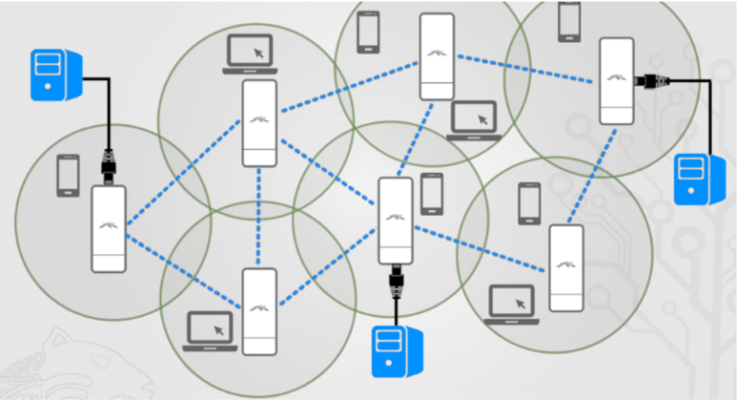
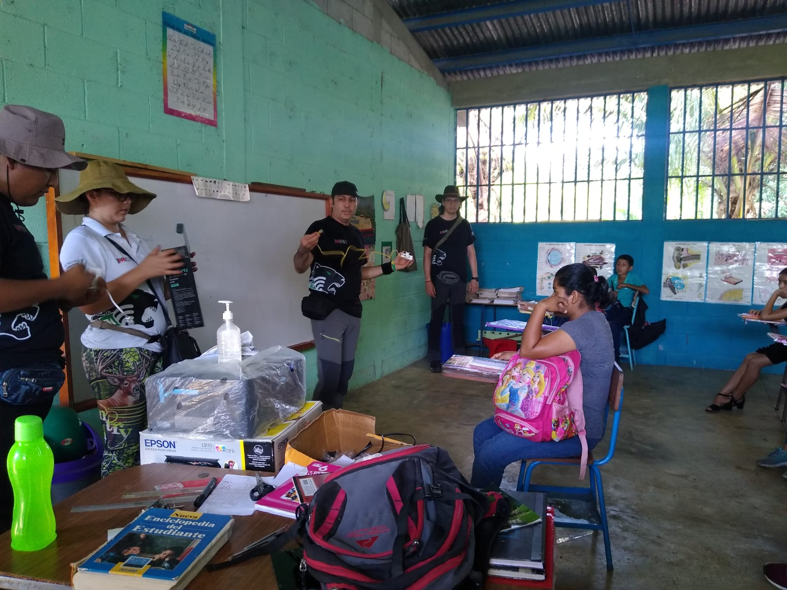
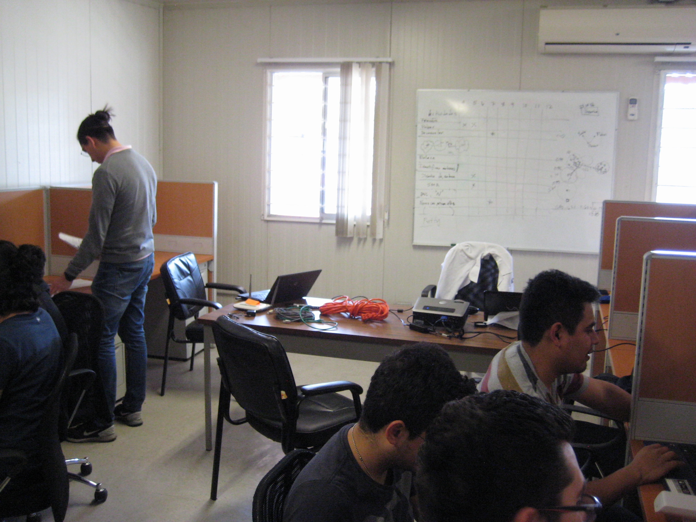

INFORMACIÓN
tecnología libre
para Comunidades reales
Conceptos, herramientas y proyectos que hacen posible conectar comunidades sin depender de internet comercial.
UAM-I
ORIGEN DEL PROYECTO
100%
SOFTWARE LIBRE
¿Qué es una intranet Comunitaria?
Definición
Una intranet comunitaria es una red de comunicación local que permite la conexión entre dispositivos dentro de una comunidad sin depender de infraestructura comercial externa. Utiliza tecnologías libres para garantizar autonomía y control local.

Problema que resuelve
Brinda acceso a comunicación y servicios digitales en zonas donde la infraestructura comercial es limitada o inexistente. Permite compartir información local, servicios educativos y aplicaciones sin dependencia de internet convencional.

Contexto de aplicación
El proyecto se desarrolla en entornos académicos y comunitarios, específicamente en la UAM Iztapalapa como laboratorio de pruebas, con miras a implementaciones en comunidades rurales y urbanas marginadas.

CONCEPTOS CLAVE
¿Qué hacemos y cómo?
Conoce los fundamentos tecnológicos detrás del proyecto.
Redes Mesh Comunitarias
Modelo de conectividad donde cada nodo de la comunidad contribuye a mantener una red local resiliente y compartida.
Leer másRadio Definido por Software
Tecnología que permite implementar sistemas de comunicación por radio mediante software, haciendo la red más flexible, configurable y accesible.
Leer másMosyNetI
Sistema desarrollado en la UAM-I para gestionar y monitorear la intranet comunitaria desde una arquitectura modular y adaptable.
Leer másSoberanía tecnológica
Las comunidades construyen y administran sus propias redes para mantener control sobre la comunicación, el acceso y la información compartida.
Leer más